2014年北京市中考数学试题 原卷解析
2014年北京市中考数学试卷
一、选择题（本题共32分，每小题4分）下面各题均有四个选项，其中只有一个．是符合题意的．
1．（4分）（2014•北京）2的相反数是（ ）
A． 2 B． ﹣2 C． ﹣
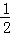
D． 考点： 相反数．菁优网版权所有
分析： 根据相反数的概念作答即可．
解答： 解：根据相反数的定义可知：2的相反数是﹣2．
故选：B．
点评： 此题主要考查相反数的定义：只有符号相反的两个数互为相反数．0的相反数是其本身．
2．（4分）（2014•北京）据报道，某小区居民李先生改进用水设备，在十年内帮助他居住小区的居民累计节水300 000吨．将300 000用科学记数法表示应为（ ）
A． 0.3×106 B． 3×105 C． 3×106 D． 30×104
考点： 科学记数法—表示较大的数．菁优网版权所有
分析： 科学记数法的表示形式为a×10n的形式，其中1≤|a|＜10，n为整数．确定n的值时，要看把原数变成a时，小数点移动了多少位，n的绝对值与小数点移动的位数相同．当原数绝对值＞1时，n是正数；当原数的绝对值＜1时，n是负数．
解答： 解：300 000=3×105，
故选：B．
点评： 此题考查科学记数法的表示方法．科学记数法的表示形式为a×10n的形式，其中1≤|a|＜10，n为整数，表示时关键要正确确定a的值以及n的值．
3．（4分）（2014•北京）如图，有6张扑克牌，从中随机抽取一张，点数为偶数的概率是（ ）
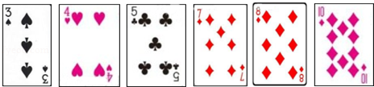
A． B．
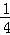
C． D． 考点： 概率公式．菁优网版权所有
分析： 由有6张扑克牌，从中随机抽取一张，点数为偶数的有3种情况，直接利用概率公式求解即可求得答案．
解答： 解：∵有6张扑克牌，从中随机抽取一张，点数为偶数的有3种情况，
∴从中随机抽取一张，点数为偶数的概率是：=．
故选D．
点评： 此题考查了概率公式的应用．用到的知识点为：概率=所求情况数与总情况数之比．
4．（4分）（2014•北京）如图是几何体的三视图，该几何体是（ ）
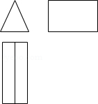
A． 圆锥 B． 圆柱 C． 正三棱柱 D． 正三棱锥
考点： 由三视图判断几何体．菁优网版权所有
分析： 如图：该几何体的俯视图与左视图均为矩形，主视图为三角形，易得出该几何体的形状．
解答： 解：该几何体的左视图为矩形，俯视图亦为矩形，主视图是一个三角形，
则可得出该几何体为三棱柱．
故选C．
点评： 本题是个简单题，主要考查的是三视图的相关知识，解得此题时要有丰富的空间想象力．
5．（4分）（2014•北京）某篮球队12名队员的年龄如表：
则这12名队员年龄的众数和平均数分别是（ ）
A． 18，19 B． 19，19 C． 18，19.5 D． 19，19.5
考点： 众数；加权平均数．菁优网版权所有
分析： 根据众数及平均数的概念求解．
解答： 解：年龄为18岁的队员人数最多，众数是18；
平均数=
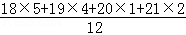
=19．故选A．
点评： 本题考查了众数及平均数的知识，掌握众数及平均数的定义是解题关键．
6．（4分）（2014•北京）园林队在某公园进行绿化，中间休息了一段时间．已知绿化面积S（单位：平方米）与工作时间t（单位：小时）的函数关系的图象如图，则休息后园林队每小时绿化面积为（ ）

A． 40平方米 B． 50平方米 C． 80平方米 D． 100平方米
考点： 函数的图象．菁优网版权所有
分析： 根据图象可得，休息后园林队2小时绿化面积为160﹣60=100平方米，然后可得绿化速度．
解答： 解：根据图象可得，休息后园林队2小时绿化面积为160﹣60=100平方米，
每小时绿化面积为100÷2=50（平方米）．
故选：B．
点评： 此题主要考查了函数图象，关键是正确理解题意，从图象中找出正确信息．
7．（4分）（2014•北京）如图，圆O的直径AB垂直于弦CD，垂足是E，∠A=22.5°，OC=4，CD的长为（ ）

A． 2 B． 4 C． 4 D． 8
B． 4 C． 4 D． 8
考点： 垂径定理；等腰直角三角形；圆周角定理．菁优网版权所有
分析： 根据圆周角定理得∠BOC=2∠A=45°，由于圆O的直径AB垂直于弦CD，根据垂径定理得CE=DE，且可判断△OCE为等腰直角三角形，所以CE= OC=2，
OC=2，
然后利用CD=2CE进行计算．
解答： 解：∵∠A=22.5°，
∴∠BOC=2∠A=45°，
∵圆O的直径AB垂直于弦CD，
∴CE=DE，△OCE为等腰直角三角形，
∴CE=OC=2，
∴CD=2CE=4．
故选C．

点评： 本题考查了圆周角定理：在同圆或等圆中，同弧或等弧所对的圆周角相等，都等于这条弧所对的圆心角的一半．也考查了等腰直角三角形的性质和垂径定理．
8．（4分）（2014•北京）已知点A为某封闭图形边界上一定点，动点P从点A出发，沿其边界顺时针匀速运动一周．设点P运动的时间为x，线段AP的长为y．表示y与x的函数关系的图象大致如图，则该封闭图形可能是（ ）

A．  B．
B．  C．
C．  D．
D． 
考点： 动点问题的函数图象．菁优网版权所有
分析： 根据等边三角形，菱形，正方形，圆的性质，分析得到y随x的增大的变化关系，然后选择答案即可．
解答： 解：A、等边三角形，点P在开始与结束的两边上直线变化，
在点A的对边上时，设等边三角形的边长为a，
则y= （a＜x＜2a），符合题干图象；
（a＜x＜2a），符合题干图象；
B、菱形，点P在开始与结束的两边上直线变化，
在另两边上时，都是先变速减小，再变速增加，题干图象不符合；
C、正方形，点P在开始与结束的两边上直线变化，
在另两边上，先变速增加至∠A的对角顶点，再变速减小至另一顶点，题干图象不符合；
D、圆，AP的长度，先变速增加至AP为直径，然后再变速减小至点P回到点A，题干图象不符合．
故选A．
点评： 本题考查了动点问题函数图象，熟练掌握等边三角形，菱形，正方形以及圆的性质，理清点P在各边时AP的长度的变化情况是解题的关键．
二、填空题（本题共16分，每小题4分）
9．（4分）（2014•北京）分解因式：ax4﹣9ay2= a（x2﹣3y）（x2+3y） ．
考点： 提公因式法与公式法的综合运用．菁优网版权所有
分析： 首先提取公因式a，进而利用平方差公式进行分解即可．
解答： 解：ax4﹣9ay2=a（x4﹣9y2）=a（x2﹣3y）（x2+3y）．
故答案为：a（x2﹣3y）（x2+3y）．
点评： 此题主要考查了提公因式法与公式法的综合运用，正确利用平方差公式是解题关键．
10．（4分）（2014•北京）在某一时刻，测得一根高为1.8m的竹竿的影长为3m，同时测得一根旗杆的影长为25m，那么这根旗杆的高度为 15 m．
考点： 相似三角形的应用．菁优网版权所有
分析： 根据同时同地物高与影长成正比列式计算即可得解．
解答： 解：设旗杆高度为x米，
由题意得，
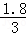
=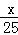
，解得x=15．
故答案为：15．
点评： 本题考查了相似三角形的应用，主要利用了同时同地物高与影长成正比，需熟记．
11．（4分）（2014•北京）如图，在平面直角坐标系xOy中，正方形OABC的边长为2．写出一个函数y=
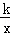
（k≠0），使它的图象与正方形OABC有公共点，这个函数的表达式为 y=，y=（0＜k≤4）（答案不唯一） ．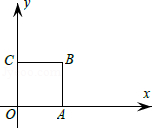
考点： 反比例函数图象上点的坐标特征．菁优网版权所有
专题： 开放型．
分析： 先根据正方形的性质得到B点坐标为（2，2），然后根据反比例函数图象上点的坐标特征求出过B点的反比例函数解析式即可．
解答： 解：∵正方形OABC的边长为2，
∴B点坐标为（2，2），
当函数y= （k≠0）过B点时，k=2×2=4，
∴满足条件的一个反比例函数解析式为y=．
故答案为：y=，y=
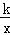
（0＜k≤4）（答案不唯一）．点评： 本题考查了反比例函数图象上点的坐标特征：反比例函数y=（k为常数，k≠0）的图象是双曲线，图象上的点（x，y）的横纵坐标的积是定值k，即xy=k．
12．（4分）（2014•北京）在平面直角坐标系xOy中，对于点P（x，y），我们把点P（﹣y+1，x+1）叫做点P的伴随点．已知点A1的伴随点为A2，点A2的伴随点为A3，点A3的伴随点为A4，…，这样依次得到点A1，A2，A3，…，An，…．若点A1的坐标为（3，1），则点A3的坐标为 （﹣3，1） ，点A2014的坐标为 （0，4） ；若点A1的坐标为（a，b），对于任意的正整数n，点An均在x轴上方，则a，b应满足的条件为 ﹣1＜a＜1且0＜b＜2 ．
考点： 规律型：点的坐标．菁优网版权所有
分析： 根据“伴随点”的定义依次求出各点，不难发现，每4个点为一个循环组依次循环，用2014除以4，根据商和余数的情况确定点A2014的坐标即可；再写出点A1（a，b）的“伴随点”，然后根据x轴上方的点的纵坐标大于0列出不等式组求解即可．
解答： 解：∵A1的坐标为（3，1），
∴A2（0，4），A3（﹣3，1），A4（0，﹣2），A5（3，1），
…，
依此类推，每4个点为一个循环组依次循环，
∵2014÷4=503余2，
∴点A2014的坐标与A2的坐标相同，为（0，4）；
∵点A1的坐标为（a，b），
∴A2（﹣b+1，a+1），A3（﹣a，﹣b+2），A4（b﹣1，﹣a+1），A5（a，b），
…，
依此类推，每4个点为一个循环组依次循环，
∵对于任意的正整数n，点An均在x轴上方，
∴
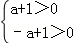
，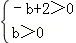
，解得﹣1＜a＜1，0＜b＜2．
故答案为：（﹣3，1），（0，4）；﹣1＜a＜1且0＜b＜2．
点评： 本题是对点的变化规律的考查，读懂题目信息，理解“伴随点”的定义并求出每4个点为一个循环组依次循环是解题的关键，也是本题的难点．
三、解答题（本题共30分，每小题5分）
13．（5分）（2014•北京）如图，点B在线段AD上，BC∥DE，AB=ED，BC=DB．求证：∠A=∠E．
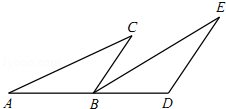
考点： 全等三角形的判定与性质．菁优网版权所有
专题： 证明题．
分析： 由全等三角形的判定定理SAS证得△ABC≌△EDB，则对应角相等：∠A=∠E．
解答： 证明：如图，∵BC∥DE，
∴∠ABC=∠BDE．
在△ABC与△EDB中，
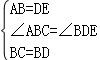
∴△ABC≌△EDB（SAS），
∴∠A=∠E．
点评： 本题考查了全等三角形的判定与性质．全等三角形的判定是结合全等三角形的性质证明线段和角相等的重要工具．在判定三角形全等时，关键是选择恰当的判定条件．
14．（5分）（2014•北京）计算：（6﹣π）0+（﹣）﹣1﹣3tan30°+|﹣
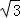
|考点： 实数的运算；零指数幂；负整数指数幂；特殊角的三角函数值．菁优网版权所有
分析： 本题涉及零指数幂、负整指数幂、特殊角的三角函数值、二次根式化简四个考点．针对每个考点分别进行计算，然后根据实数的运算法则求得计算结果．
解答： 解：原式=1﹣5﹣
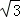
+=﹣4．
点评： 本题考查实数的综合运算能力，是各地中考题中常见的计算题型．解决此类题目的关键是熟记特殊角的三角函数值，熟练掌握负整数指数幂、零指数幂、二次根式、绝对值等考点的运算．
15．（5分）（2014•北京）解不等式 x﹣1≤
x﹣1≤ x﹣，并把它的解集在数轴上表示出来．
x﹣，并把它的解集在数轴上表示出来．

考点： 解一元一次不等式；在数轴上表示不等式的解集．菁优网版权所有
分析： 去分母、去括号，移项、合并同类项，系数化成1即可求解．
解答： 解：去分母，得：3x﹣6≤4x﹣3，
移项，得：3x﹣4x≤6﹣3，
合并同类项，得：﹣x≤3，
系数化成1得：x≥﹣3．
则解集在数轴上表示出来为：
 ．
．
点评： 本题考查了解简单不等式的能力，解答这类题学生往往在解题时不注意移项要改变符号这一点而出错．
解不等式要依据不等式的基本性质：
（1）不等式的两边同时加上或减去同一个数或整式不等号的方向不变；
（2）不等式的两边同时乘以或除以同一个正数不等号的方向不变；
（3）不等式的两边同时乘以或除以同一个负数不等号的方向改变．
16．（5分）（2014•北京）已知x﹣y= ，求代数式（x+1）2﹣2x+y（y﹣2x）的值．
，求代数式（x+1）2﹣2x+y（y﹣2x）的值．
考点： 整式的混合运算—化简求值．菁优网版权所有
分析： 先把代数式计算，进一步化简，再整体代入x﹣y=，求得数值即可．
解答： 解：∵x﹣y= ，
，
∴（x+1）2﹣2x+y（y﹣2x）
=x2+2x+1﹣2x+y2﹣2xy
=x2+y2﹣2xy+1
=（x﹣y）2+1
=（）2+1
=3+1
=4．
点评： 此题考查整式的混合运算与化简求值，注意先化简，再整体代入求值．
17．（5分）（2014•北京）已知关于x的方程mx2﹣（m+2）x+2=0（m≠0）．
（1）求证：方程总有两个实数根；
（2）若方程的两个实数根都是整数，求正整数m的值．
考点： 根的判别式．菁优网版权所有
专题： 计算题．
分析： （1）先计算判别式的值得到△=（m+2）2﹣4m×2=（m﹣2）2，再根据非负数的值得到△≥0，然后根据判别式的意义得到方程总有两个实数根；
（2）利用因式分解法解方程得到x1=1，x2= ，然后利用整数的整除性确定正整数m的值．
，然后利用整数的整除性确定正整数m的值．
解答： （1）证明：∵m≠0，
△=（m+2）2﹣4m×2
=m2﹣4m+4
=（m﹣2）2，
而（m﹣2）2≥0，即△≥0，
∴方程总有两个实数根；
（2）解：（x﹣1）（mx﹣2）=0，
x﹣1=0或mx﹣2=0，
∴x1=1，x2=，
当m为正整数1或2时，x2为整数，
即方程的两个实数根都是整数，
∴正整数m的值为1或2．
点评： 本题考查了一元二次方程ax2+bx+c=0（a≠0）的根的判别式△=b2﹣4ac：当△＞0，方程有两个不相等的实数根；当△=0，方程有两个相等的实数根；当△＜0，方程没有实数根．
18．（5分）（2014•北京）列方程或方程组解应用题：
小马自驾私家车从A地到B地，驾驶原来的燃油汽车所需油费108元，驾驶新购买的纯电动车所需电费 27元，已知每行驶1千米，原来的燃油汽车所需的油费比新购买的纯电动汽车所需的电费多0.54元，求新购买的纯电动汽车每行驶1千米所需的电费．
考点： 分式方程的应用．菁优网版权所有
分析： 设新购买的纯电动汽车每行驶1千米所需的电费为x元，则原来的燃油汽车所需的油费为（x+0.54）元，根据驾驶原来的燃油汽车所需油费108元，驾驶新购买的纯电动车所需电费27元，所行的路程相等列出方程解决问题．
解答： 解：设新购买的纯电动汽车每行驶1千米所需的电费为x元，由题意得
 =
=
解得：x=0.18
经检验x=0.18为原方程的解
答：纯电动汽车每行驶1千米所需的电费为0.18元．
点评： 此题考查分式方程的应用，找出题目蕴含的数量关系，列出方程解决问题．
四、解答题（本题共20分，每小题5分）
19．（5分）（2014•北京）如图，在▱ABCD中，AE平分∠BAD，交BC于点E，BF平分ABC，交AD于点F，AE与BF交于点P，连接EF，PD．
（1）求证：四边形ABEF是菱形；
（2）若AB=4，AD=6，∠ABC=60°，求tan∠ADP的值．
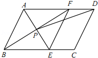
考点： 菱形的判定；平行四边形的性质；解直角三角形．菁优网版权所有
分析： （1）先证明四边形是平行四边形，再根据平行四边形和角平分线的性质可得AB=BE，AB=AF，AF=BE，从而证明四边形ABEF是菱形；
（2）作PH⊥AD于H，根据四边形ABEF是菱形，∠ABC=60°，AB=4，得到AB=AF=4，∠ABF=∠ADB=30°，AP⊥BF，从而得到PH=
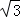
，DH=5，然后利用锐角三角函数的定义求解即可．解答： （1）证明：∵四边形ABCD是平行四边形，
∴AD∥BC．
∴∠DAE=∠AEB．
∵AE是角平分线，
∴∠DAE=∠BAE．
∴∠BAE=∠AEB．
∴AB=BE．
同理AB=AF．
∴AF=BE．
∴四边形ABEF是平行四边形．
∵AB=BE，
∴四边形ABEF是菱形．
（2）解：作PH⊥AD于H，
∵四边形ABEF是菱形，∠ABC=60°，AB=4，
∴AB=AF=4，∠ABF=∠ADB=30°，AP⊥BF，
∴AP=AB=2，
∴PH=
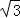
，DH=5，∴tan∠ADP=
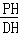
=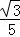
．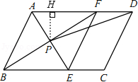
点评： 本题考查了菱形的判定及平行四边形的性质，解题的关键是牢记菱形的几个判定定理，难度不大．
20．（5分）（2014•北京）根据某研究院公布的2009～2013年我国成年国民阅读调查报告的部分相关数据，绘制的统计图表如下：
2009～2013年成年国民年人均阅读图书数量统计表
年份 | 年人均阅读图书数量（本） |
2009 | 3.88 |
2010 | 4.12 |
2011 | 4.35 |
2012 | 4.56 |
2013 | 4.78 |
根据以上信息解答下列问题：
（1）直接写出扇形统计图中m的值；
（2）从2009到2013年，成年国民年人均阅读图书的数量每年增长的幅度近似相等，估算2014年成年国民年人均阅读图书的数量约为 5 本；
（3）2013年某小区倾向图书阅读的成年国民有990人，若该小区2014年与2013年成年国民的人数基本持平，估算2014年该小区成年国民阅读图书的总数量约为 7500 本．
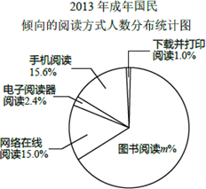
考点： 扇形统计图；用样本估计总体；统计表．菁优网版权所有
分析： （1）1直接减去个部分的百分数即可；
（2）设从2009到2013年平均增长幅度为x，列方程求出x的值即可；
（3）根据（2）的结果直接计算．
解答： 解：（1）m%=1﹣1.0%﹣15.6%﹣2.4%﹣15.0%=66%，
∴m=66．
（2）设从2009到2013年平均增长幅度为x，列方程得，
3.88×（1+x）4=4.78，
1+x≈1.05，
x≈0.05，
4.78×（1+0.05）≈5．
（3）990÷0.66×5=7500，
故2014年该小区成年国民阅读图书的总数量约为7500本．
故答案为5，7500．
点评： 本题考查了扇形统计图，能从图表中找到相关信息并加以利用是解题的关键．
21．（5分）（2014•北京）如图，AB是eO的直径，C是»AB的中点，eO的切线BD交AC的延长线于点D，E 是OB的中点，CE的延长线交切线BD于点F，AF交eO于点H，连接BH．
（1）求证：AC=CD；
（2）若OB=2，求BH的长．
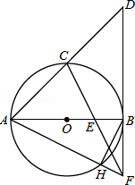
考点： 切线的性质；全等三角形的判定与性质；勾股定理．菁优网版权所有
分析： （1）连接OC，由C是
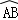
的中点，AB是⊙O的直径，则OC⊥AB，再由BD是⊙O的切线，得BD⊥AB，从而得出OC∥BD，即可证明AC=CD；（2）根据点E是OB的中点，得OE=BE，可证明△COE≌△FBE（ASA），则BF=CO，即可得出BF=2，由勾股定理得出AF=
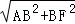
，由AB是直径，得BH⊥AF，可证明△ABF∽△BHF，即可得出BH的长．解答： （1）证明：连接OC，
∵C是AB的中点，AB是⊙O的直径，
∴O⊥AB，
∵BD是⊙O的切线，
∴BD⊥AB，
∴OC∥BD，
∵OA=OB，
∴AC=CD；
（2）解：∵E是OB的中点，
∴OE=BE，
在△COE和△FBE中，
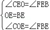
，∴△COE≌△FBE（ASA），
∴BF=CO，
∴OB=2，
∴BF=2，
∴AF==2
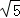
，∵AB是直径，
∴BH⊥AF，
∴△ABF∽△BHF，
∴
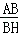
=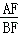
，∴AB•BF=AF•BH，
∴BH=
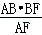
=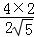
=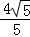
．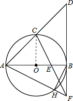
点评： 本题考查了切线的性质以及全等三角形的判定和性质、勾股定理，是中档题，难度不大．
22．（5分）（2014•北京）阅读下面材料：小腾遇到这样一个问题：如图1，在△ABC中，点D在线段BC上，∠BAD=75°，∠CAD=30°，AD=2，BD=2DC，求AC的长．
小腾发现，过点C作CE∥AB，交AD的延长线于点E，通过构造△ACE，经过推理和计算能够使问题得到解决（如图 2）．
请回答：∠ACE的度数为 75° ，AC的长为 3 ．
参考小腾思考问题的方法，解决问题：
如图 3，在四边形 ABCD中，∠BAC=90°，∠CAD=30°，∠ADC=75°，AC与BD交于点E，AE=2，BE=2ED，求BC的长．
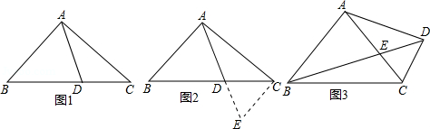
考点： 相似三角形的判定与性质；勾股定理；解直角三角形．菁优网版权所有
分析： 根据相似的三角形的判定与性质，可得
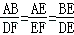
=2，根据等腰三角形的判定，可得AD=AC，根据正切函数，可得DF的长，根据直角三角形的性质，可得AB与DF的关系，根据勾股定理，可得答案．解答： 解：∠ACE=75°，AC的长为3．
过点D作DF⊥AC于点F．
∵∠BAC=90°=∠DFA，
∴AB∥DF，
∴△ABE∽△FDE，∴=2，
∴EF=1，AB=2DF．
在△ACD中，∠CAD=30°，∠ADC=75°，
∴∠ACD=75°，AC=AD．
∵DF⊥AC，
∴∠AFD=90°，
在△AFD中，AF=2+1=3，∠FAD=30°，
∴DF=AFtan30°=
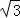
，AD=2DF=2．∴AC=AD=2，AB=2DF=2．
∴BC=
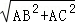
=2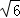
．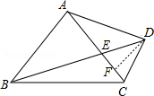
点评： 本题考查了相似三角形的判定与性质，利用了相似三角形的判定与性质，直角三角形的性质，勾股定理．
五、解答题（本题共22分，第23题7分，第24题7分，第25题8分）
23．（7分）（2014•北京）在平面直角坐标系xOy中，抛物线y=2x2+mx+n经过点A（0，﹣2），B（3，4）．
（1）求抛物线的表达式及对称轴；
（2）设点B关于原点的对称点为C，点D是抛物线对称轴上一动点，记抛物线在A，B之间的部分为图象G（包含A，B两点）．若直线CD 与图象G有公共点，结合函数图象，求点D纵坐标t的取值范围．
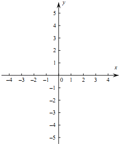
考点： 待定系数法求二次函数解析式；待定系数法求一次函数解析式；二次函数的最值．菁优网版权所有
专题： 计算题．
分析： （1）将A与B坐标代入抛物线解析式求出m与n的值，确定出抛物线解析式，求出对称轴即可；
（2）由题意确定出C坐标，以及二次函数的最小值，确定出D纵坐标的最小值，求出直线BC解析式，令x=1求出y的值，即可确定出t的范围．
解答： 解：（1）∵抛物线y=2x2+mx+n经过点A（0，﹣2），B（3，4），
代入得：
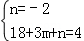
，解得：
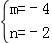
，∴抛物线解析式为y=2x2﹣4x﹣2，对称轴为直线x=1；
（2）由题意得：C（﹣3，﹣4），二次函数y=2x2﹣4x﹣2的最小值为﹣4，
由函数图象得出D纵坐标最小值为﹣4，
设直线BC解析式为y=kx+b，
将B与C坐标代入得：
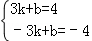
，解得：k=，b=0，
∴直线BC解析式为y=x，
当x=1时，y=，
则t的范围为﹣4≤t≤．
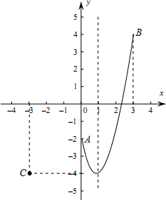
点评： 此题考查了待定系数法求二次函数解析式，待定系数法求一次函数解析式，以及函数的最值，熟练掌握待定系数法是解本题的关键．
24．（7分）（2014•北京）在正方形ABCD外侧作直线AP，点B关于直线AP的对称点为E，连接BE，DE，其中DE交直线AP于点F．
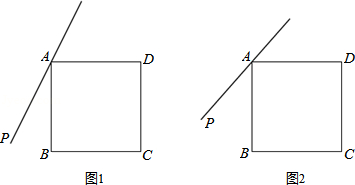
（1）依题意补全图1；
（2）若∠PAB=20°，求∠ADF的度数；
（3）如图2，若45°＜∠PAB＜90°，用等式表示线段AB，FE，FD之间的数量关系，并证明．
考点： 四边形综合题．菁优网版权所有
分析： （1）根据题意直接画出图形得出即可；
（2）利用对称的性质以及等角对等边进而得出答案；
（3）由轴对称的性质可得：EF=BF，AE=AB=AD，∠ABF=∠AEF=∠ADF，进而利用勾股定理得出答案．
解答： 解：（1）如图1所示：
（2）如图2，连接AE，
则∠PAB=∠PAE=20°，AE=AB=AD，
∵四边形ABCD是正方形，
∴∠BAD=90°，
∴∠EAP=∠BAP=20°，
∴∠EAD=130°，
∴∠ADF=
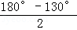
=25°；（3）如图3，连接AE、BF、BD，
由轴对称的性质可得：EF=BF，AE=AB=AD，
∠ABF=∠AEF=∠ADF，
∴∠BFD=∠BAD=90°，
∴BF2+FD2=BD2，
∴EF2+FD2=2AB2．
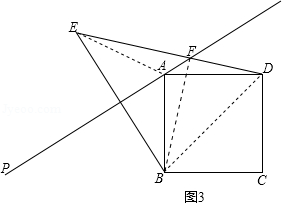
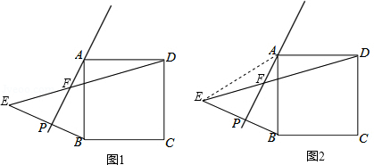
点评： 此题主要考查了正方形的性质以及勾股定理和等腰三角形的性质等知识，利用轴对称的性质得出对应边相等是解题关键．
25．（8分）（2014•北京）对某一个函数给出如下定义：若存在实数M＞0，对于任意的函数值y，都满足﹣M＜y≤M，则称这个函数是有界函数，在所有满足条件的M中，其最小值称为这个函数的边界值．例如，如图中的函数是有界函数，其边界值是1．
（1）分别判断函数 y= （x＞0）和y=x+1（﹣4≤x≤2）是不是有界函数？若是有界函数，求其边界值；
（x＞0）和y=x+1（﹣4≤x≤2）是不是有界函数？若是有界函数，求其边界值；
（2）若函数y=﹣x+1（a≤x≤b，b＞a）的边界值是2，且这个函数的最大值也是2，求b的取值范围；
（3）将函数 y=x2（﹣1≤x≤m，m≥0）的图象向下平移m个单位，得到的函数的边界值是t，当m在什么范围时，满足 ≤t≤1？
≤t≤1？

考点： 二次函数综合题．菁优网版权所有
分析： （1）根据有界函数的定义和函数的边界值的定义进行答题；
（2）根据函数的增减性、边界值确定a=﹣1；然后由“函数的最大值也是2”来求b的取值范围；
（3）需要分类讨论：m＜1和m≥1两种情况．由函数解析式得到该函数图象过点（﹣1，1）、（0，0），根据平移的性质得到这两点平移后的坐标分别是（﹣1，1﹣m）、（0，﹣m）；最后由函数边界值的定义列出不等式 ≤1﹣m≤1或﹣1≤﹣m≤﹣，易求m取值范围：0≤m≤
≤1﹣m≤1或﹣1≤﹣m≤﹣，易求m取值范围：0≤m≤ 或≤m≤1．
或≤m≤1．
解答： 解：（1）根据有界函数的定义知，函数y= （x＞0）不是有界函数．
（x＞0）不是有界函数．
y=x+1（﹣4≤x≤2）是有界函数．边界值为：2+1=3；
（2）∵函数y=﹣x+1的图象是y随x的增大而减小，
∴当x=a时，y=﹣a+1=2，则a=﹣1
当x=b时，y=﹣b+1．则 ，
，
∴﹣1＜b≤3；
（3）若m＞1，函数向下平移m个单位后，x=0时，函数值小于﹣1，此时函数的边界t≥1，与题意不符，故m≤1．
当x=﹣1时，y=1 即过点（﹣1，1）
当x=0时，y最小=0，即过点（0，0），
都向下平移m个单位，则
（﹣1，1﹣m）、（0，﹣m）
 ≤1﹣m≤1或﹣1≤﹣m≤﹣，
≤1﹣m≤1或﹣1≤﹣m≤﹣，
∴0≤m≤ 或≤m≤1．
或≤m≤1．
点评： 本题考查了二次函数综合题型．掌握“有界函数”和“有界函数的边界值”的定义是解题的关键．